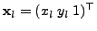
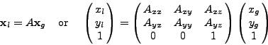

Next: Edge detection
Up: Feature detection
Previous: Feature detection
Contents
Image feature coordinate frames
Feature detectors are often applied to a rectangular sub-region of an image,
and may be applied to a down-sampled version of the image for greater speed.
The most natural coordinate frame to represent the coordinates of features
is then the local coordinate frame of the feature map. On the other hand,
when using the features for higher level computations such as computing
homographies or structure from motion, it is most effecient to use the
coordinate frame of the original image to represent the features, so that
features detected in different regions can be easily combined in the same
coordinate frame. In Gandalf the convention used is that the integer
pixel positions are provided in the local coordinate frame of the feature
map, while floating point positions are in a user-defined ``global''
coordinate frame, specified as an affine transformation of the local
coordinate frame. The situation is illustrated in Figure 5.3.
Figure 5.3:
Illustration of the local and global coordinate frames for feature
detection. The features are detected in the smaller rectangular
region described by the local coordinate frame, while for
many purposes it is more convenient to also represent the feature
positions in a user-defined ``global'' coordinate frame, which is
normally that of the original image.
|
Let the position of a feature in the local coordinate frame in homogeneous
coordinates be
. Then the global coordinates
in global coordinates are related to as

where  is an 2D affine homography matrix. Normally will represent
a simple offset, with perhaps a scaling of coordinates, but this representation
allows for more general coordinate transformations. The matrix is passed in
by the user program to the feature detection algorithms, as is explained
below.
is an 2D affine homography matrix. Normally will represent
a simple offset, with perhaps a scaling of coordinates, but this representation
allows for more general coordinate transformations. The matrix is passed in
by the user program to the feature detection algorithms, as is explained
below.
Next: Edge detection
Up: Feature detection
Previous: Feature detection
Contents
Philip McLauchlan
2009-01-27